存储系统
第三章"存储系统"是《计算机组成原理》中承上启下、也是期末考试必考大题的绝对核心。如果说前两章是在研究CPU如何"算"，那么这一章就是研究数据如何"存"。
存储系统设计的核心矛盾是：容量大、速度快、成本低三者不可兼得。为了解决这个矛盾，现代计算机采用了多级存储体系（寄存器 -> Cache -> 主存 -> 辅存）。
知识点
1. 核心基础：主存技术指标与数据组织
-
计算容量与引脚：这是最基础的考点。芯片的存储容量 = \(2^M \times N\)位（其中M为地址线根数，N为数据线根数）。例如，64K×8位的芯片，需要16根地址线和8根数据线。
-
大端与小端模式：按字节编址时，一个字跨越多个字节。大端模式（Big-endian）是将最高有效字节（MSB）存放在低地址；小端模式（Little-endian）是将最低有效字节（LSB）存放在低地址。在考试中常以结构体在内存中的地址分配来出题。
2. 必考对比：SRAM 与 DRAM（高频选择/填空）
主存通常由半导体存储器构成，你需要深刻理解这两者的底层区别：
- SRAM（静态RAM）：依靠触发器（锁存器）记忆信息，只要不断电信息就一直保持，速度快但价格贵，不需要刷新，非破坏性读出，通常用作Cache。
-
DRAM（动态RAM）：依靠电容上的电荷记忆信息，速度较SRAM慢但便宜，集成度高，通常用作主存。
-
DRAM的"刷新"机制（重点考点）：因为电容会漏电，所以必须定期补充电荷（刷新）。
- 刷新原则：采用"读出"方式，每次按行刷新（同时刷新各DRAM芯片，片内逐行刷新）。
- 刷新策略分为：集中式刷新（有"死时间"，期间CPU无法访问内存）和分散式刷新（将刷新分散到每个指令周期，无死区）。
- 地址引脚复用：DRAM通常为了减少引脚，将行地址和列地址分两次送入。
- 刷新计算方法（必考计算）：设DRAM芯片有 \(L\) 行，刷新周期为 \(T_{ref}\)（通常为2ms或4ms），存取周期为 \(T\)。
- 集中刷新：在刷新周期末尾集中安排所有行的刷新。死时间 = \(L \times T\)。例如 \(L = 128\)，\(T = 0.5\mu s\)，则死时间 = \(64\mu s\)，期间CPU无法访存。
- 分散刷新：每个存取周期中前半段用于正常读/写，后半段用于刷新一行。存取周期变为 \(2T\)，无死区，但系统速度降低。
- 异步刷新：将 \(L\) 次刷新均匀分配到刷新周期内，每隔 \(T_{ref}/L\) 时间刷新一行。例如 \(T_{ref}=2ms\)，\(L=128\)，则每隔 \(15.6\mu s\) 刷新一行，每行刷新仅占用一个 \(T\)，死时间缩短为单行刷新时间。
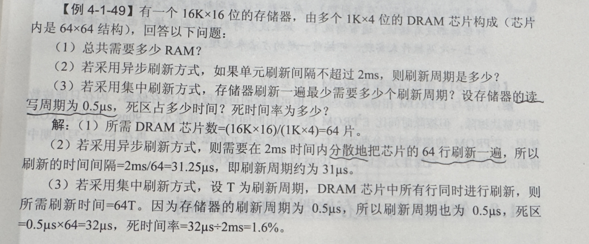
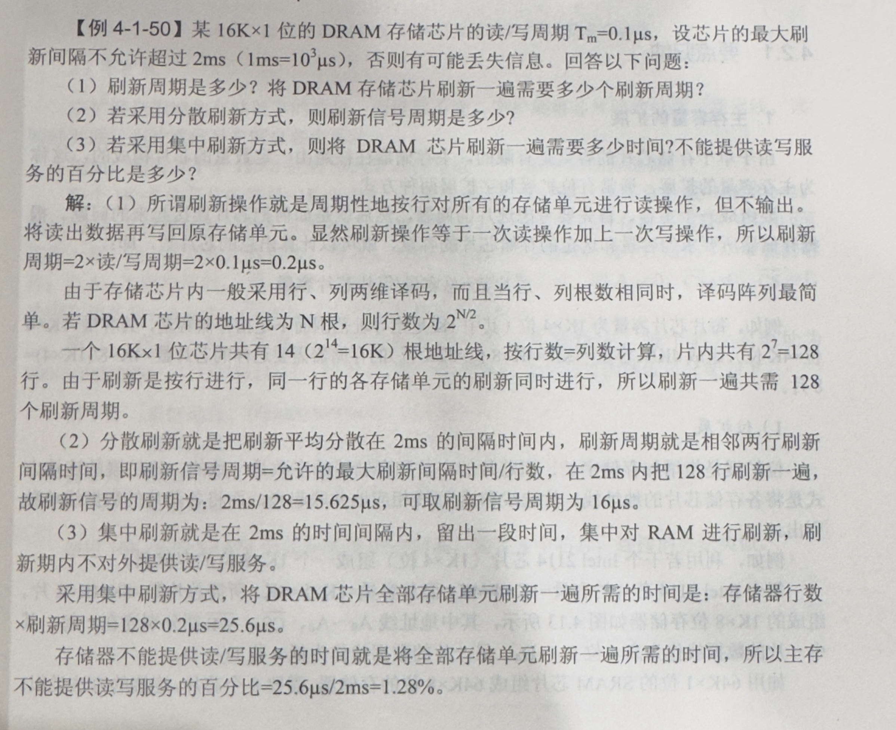
半导体静态存储器SRAM是由双稳态电路构成，并依靠其稳态特性来保存信息； 动态存储器DRAM是利用电容器存储电荷的特性来存储数据，依靠定时刷新和读后再生对信息进行保存，而ROM中的信息一经写入就不再发生变化。 DRAM是破坏性读出，因此需要读后重写。
3. 常考对比：ROM 的分类与特点
ROM（只读存储器）是另一大类半导体存储器，特点是非易失性（断电不丢数据），常用于存放固件、引导程序等。
- 掩膜ROM（Mask ROM）：在生产时一次性写入数据，之后不可修改。成本低（大批量），适合成熟产品的固件。
- PROM（可编程ROM）：用户可用专用设备一次性写入（烧录），写入后不可修改。只允许写一次。
- EPROM（可擦除可编程ROM）：可用紫外线照射擦除全部内容后重新写入。擦写次数有限（约几十次），需从电路板取下芯片才能擦除。
- EEPROM（电可擦除可编程ROM）：可用电信号擦写，支持按字节擦写，无需取下芯片，方便但容量小、价格高。
- Flash Memory（闪存）：EEPROM的改进版，支持按块擦写，速度快、集成度高，广泛用于U盘、SSD、BIOS芯片。
速记：掩膜ROM不可改 → PROM可改一次 → EPROM紫外线整片擦 → EEPROM电信号按字节擦 → Flash电信号按块擦（最快）。
4. 必考设计题：存储器容量的扩展
当单个芯片容量不够时，需要扩展，这是必考的连线设计题：
-
位扩展：增加存储字长。例如用2片1K×4位芯片组成1K×8位。特点是：地址线并联，片选线（CS）并联，数据线分别接不同的引脚。
-
字扩展：增加字数（存储单元数）。例如用2片1K×8位组成2K×8位。特点是：数据线并联，高位地址线必须通过译码器（如74138）产生片选信号，选中不同的芯片。
5. 性能优化：多模块交叉存储器
为了缓解CPU快和主存慢的矛盾，可以采用多个主存模块并行工作。
-
高位交叉（顺序方式）：高位地址选模块，低位地址选字。本质上还是串行，相当于单纯扩充容量。
-
低位交叉（轮流方式 - 重点）：低位地址选模块。使得连续的地址分布在不同的模块中，从而可以实现流水线式的并行访问。
-
核心计算：设模块存取周期为 \(T\)，总线传送周期为 \(\tau\)，交叉模块数为 \(m\)。为了实现流水线，必须满足 \(T = m \tau\) （\(m\) 也称为交叉存取度）。这种方式在不改变单个模块存取周期的前提下，成倍增加了存储器的带宽。
6. 绝对核心压轴大题：Cache（高速缓冲存储器）
这部分几乎占据了考试的大头，重点考察原理、计算和地址映射： * 理论基础：局部性原理。包含空间局部性（程序倾向于访问刚访问过的数据的邻近位置，如顺序执行、数组遍历）和时间局部性（程序倾向于在不久的将来再次访问同一数据，如循环体、变量）。
-
性能计算：设 \(h\) 为命中率，\(t_c\) 为Cache存取周期，\(t_m\) 为主存周期。系统的平均访问时间 \(t_a = h \cdot t_c + (1-h)t_m\)。访问效率 \(e = t_c / t_a\)。


-
主存与Cache的地址映射（最硬核的计算/分析题）：
- 全相联映射：主存块可以放到Cache的任意行。优点是冲突概率极小，缺点是需要昂贵的相联存储器进行比较，检索成本极高。主存地址划分为：
主存标记 (Tag) + 块内地址 (Word)。 - 直接映射：主存块只能映射到Cache的唯一固定行（\(j \pmod{2^c}\)）。优点是硬件简单，缺点是极易发生冲突抖动。主存地址划分为：
主存标记 (Tag) + Cache行号 (Line/Index) + 块内地址 (Word)。 - 组相联映射（折中方案）：Cache分为若干组，主存块可以映射到固定组的任意行（组间直接映射，组内全相联）。主存地址划分为：
主存标记 (Tag) + 组号 (Set) + 块内地址 (Word)。
- 全相联映射：主存块可以放到Cache的任意行。优点是冲突概率极小，缺点是需要昂贵的相联存储器进行比较，检索成本极高。主存地址划分为：
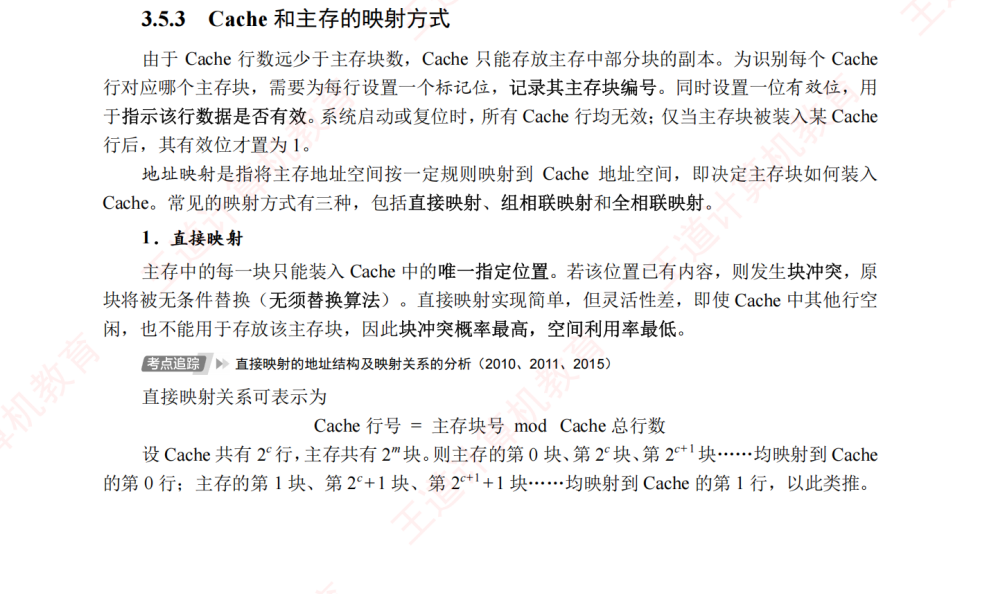
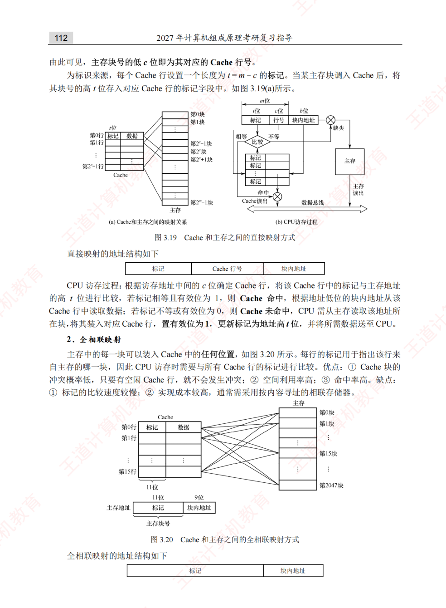
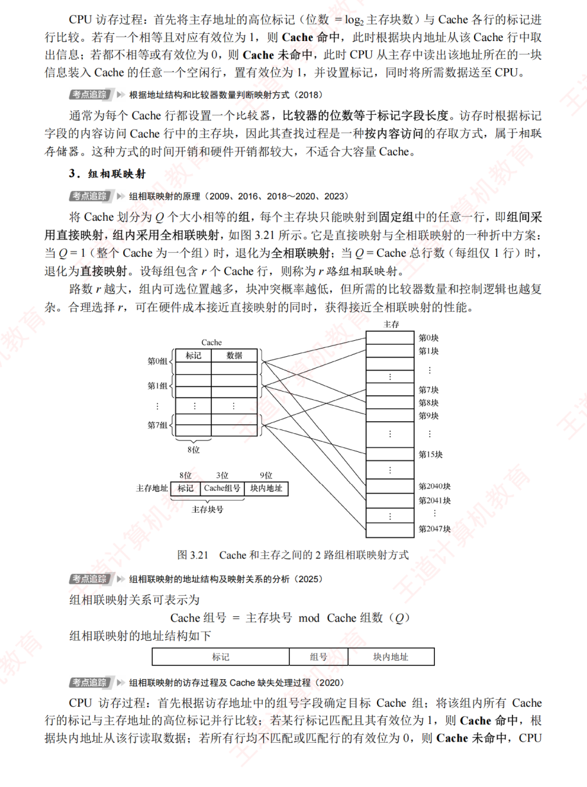
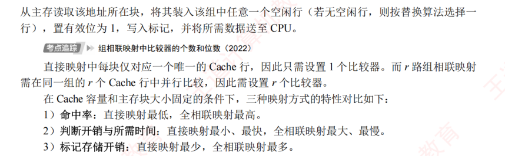


-
替换算法：当Cache满了，新数据该替换谁？常考 LRU（近期最少使用法） 和 FIFO（先进先出法）。考试常要求画图或列表计算命中率。
-
写策略：CPU写数据时如何保证Cache和主存一致？
- 全写法（Write-Through）：同时写入Cache和主存。
- 写回法（Write-Back）：只写Cache，利用一个"脏位（Dirty bit）"，只有当该块被替换出Cache时才写回主存。
-
Cache总容量计算（必考陷阱题）：Cache的实际存储容量不仅包含数据，还包含标记（Tag）和有效位（Valid bit），写回法还要加脏位（Dirty bit）。
- 每行的总位数 = 标记位数 + 有效位(+ 脏位) + 数据位数（即块大小）
- Cache总容量 = 每行总位数 × Cache行数
- 关键：题目问"Cache总容量"时要包含标记和有效位；问"Cache数据容量"时只算数据部分。
7. 拓展：虚拟存储器
虚拟存储器是"主存-辅存"层次的关键技术，使得程序员可以使用比实际物理内存更大的地址空间。
- 核心思想：将程序使用的虚拟地址（逻辑地址）通过地址映射转换为物理地址（实地址），只在需要时才将数据从辅存调入主存。
- 三种管理方式：
- 页式虚拟存储器：将虚拟地址空间和物理地址空间都划分为固定大小的页（Page），通过页表进行映射。优点是简单、页内碎片小；缺点是页表可能很大。
- 段式虚拟存储器：按程序的逻辑模块划分段（Segment），每段长度可变。优点是共享和保护方便；缺点是段间碎片（外部碎片）。
- 段页式虚拟存储器：先分段、段内再分页，结合两者优点，但地址变换需两次查表（段表+页表），开销较大。
- TLB（快表）：页表存在主存中，每次访存都要先查页表会严重拖慢速度。TLB是页表的高速缓存，存放最近使用的页表项，命中时可直接得到物理地址，避免访问主存中的页表。
- 与Cache的类比：TLB-页表的关系 ≈ Cache-主存的关系，两者都依赖局部性原理。
💡 大二备考复习建议： 第三章的特点是概念多且密，结合计算。复习的重中之重是： 1. 自己画一遍"直接映射"和"组相联映射"的主存地址结构图，能清楚地根据"Cache总容量"和"块大小"算出 Tag、Index 和 Word 分别占多少位。 2. 搞懂 DRAM 集中刷新和分散刷新的区别。 3. 掌握存储器字扩展中 74138 译码器与高位地址线的连接逻辑。
8.其他（我从其他书上看到的）
（1）主存储器的地址寄存器和数据寄存器各自的作用是什么？ 在主寄存器中，地址寄存器 MAR 用来存放当前CPU访问的内存地址单元，或者存放CPU写入内存的内存地址单元。数据寄存器 MDR 用来存放由内存中读出的信息，或者写入内存的信息。
(2) 字节地址空间（Byte Address Space） 简单来说，就是 CPU 能够直接寻址和访问的、以“字节（Byte）”为最小独立单位的内存地址范围。
为了让你更容易理解，我们可以把它拆解成两个核心概念：“按字节寻址” 和 “空间大小”。
-
核心概念：为什么要“按字节”？
在现代计算机体系结构中，内存就像一栋极其巨大的公寓楼，而字节地址空间就是这栋楼的房间号系统。
-
最小划分单位（房间）：内存里最小的存储单元是“位”（bit，即 0 或 1），但 CPU 觉得按“位”来找东西太繁琐了。于是，计算机规定把 8 个 bit 组成一个字节（Byte）。
-
每一个字节都有一个专属的“门牌号”：这个门牌号就是内存地址（Address）。CPU 只要给出某一个地址，就能精确地取出或者写入这 1 个字节的数据。这种管理方式就叫做按字节寻址（Byte-addressable）。
-
空间的大小由什么决定？
“地址空间”的大小，也就是这栋公寓楼到底能盖多少个房间，完全取决于 CPU 的地址总线宽度（也就是常说的 32 位或 64 位系统）。
如果 CPU 有 \(n\) 根地址线，它就能发出 \(2^n\) 个不同的二进制地址组合。因为每个地址对应一个字节，所以：
💡 举个经典的例子： 某计算机系统主存采用32位字节地址空间和64位数据线访问存储器。
① 核心核心指标
- 空间有多大（32位字节地址空间）：最大支持 4GB 内存（\(2^{32} \times 1\text{ Byte}\)），地址范围从
0x00000000到0xFFFFFFFF。 - 一次搬多少（64位数据线）：每次访存可以同时传输 8个字节（64位）的数据。
② 硬件如何运作（29位选行 + 3位选列）
由于内存是一口气读 8 字节，32 位的地址线在送往内存硬件时会被拆分：
- 高 29 位（\(A_{31} \sim A_3\)）：用来寻找是哪一个 64 位的“数据行”。
- 低 3 位（\(A_2 \sim A_0\)）：在硬件层决定这 8 个字节里的哪几位生效（或由 CPU 内部筛选）。
③ 得出的结论
- ❶ 最大容量：4 GB。
- ❷ 传输效率：一次读写 8 字节。
- ❸ 代码优化要求：数据对象的起始地址最好是 8 的倍数（即低 3 位地址为 0）。如果数据跨行存放，CPU 需要访存 2 次 才能读完，会严重拖慢性能（这也是 C/C++ 编译器会自动做内存对齐的原因）。
解题
1.ppt练习1
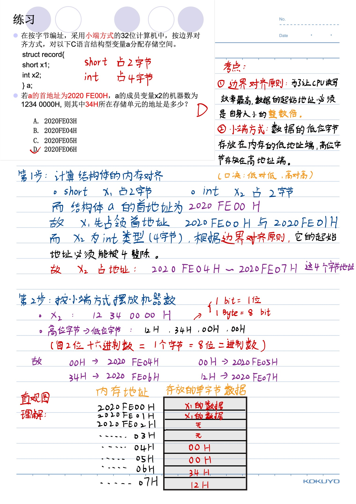
2.ppt练习2
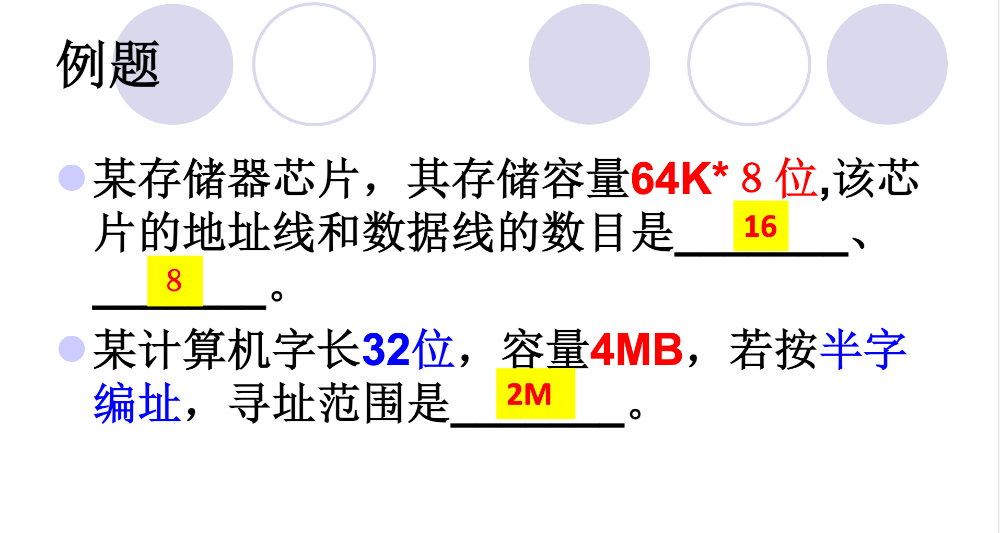
题目：某计算机字长32位，容量4MB，若按半字编址，寻址范围是_。
🛠️概念理解
-
容量（以字节为单位）：指的是这个存储器里总共能装多少个 Byte（也就是 \(1\text{B} = 8\text{位}\) 组成的单元）。这是物理上固定死的。
-
编址方式：决定了计算机怎么给这些空间发"门牌号"。
- 按字节编址：每 \(1\text{B}\)（8位）发一个门牌号。
- 按半字编址：每半个字发一个门牌号。
- 按字编址：每完整的一个字发一个门牌号。
-
寻址范围：指的是最多能发出多少个不同的"门牌号"。
💡 详细解题步骤：
- 统一基本已知量：
- 计算机字长：\(\text{Word} = 32 \text{ 位 (bit)} = 4 \text{ 字节 (Byte)}\)
-
总容量：\(\text{Capacity} = 4 \text{ MB} = 4 \times 2^{20} \text{ B}\)
-
计算编址单位（半字）的大小：
- 题目规定"按半字编址"，即每半个字分配一个物理地址。
- 计算寻址范围：
- 寻址范围即该存储器在当前编址方式下，总共能分出多少个不同的地址（门牌号）。
- 代入数据计算
3.作业P122 - 1
- 设有一个具有 20 位地址和 32 位字长的存储器，问： (1)该存储器能存储多少字节的信息? (2)如果存储器由 512K×8 位 SRAM 芯片组成，需要多少片? (3)需要多少位地址作芯片选择?
🛠️ 思路拆解与核心概念
(1) 该存储器能存储多少字节的信息？
-
核心逻辑：存储器的总容量由地址线位数（决定有多少个房间）和字长（决定每个房间有多大）共同决定。
-
地址线 20 位，说明有 \(2^{20} = 1\text{M}\) 个存储单元（房间）。
-
每个存储单元的字长是 32 位（bit）。题目问的是多少字节（Byte），所以要把位（bit）换算成字节（Byte）：\(32\text{位} = 4\text{字节}\)。
-
总容量 = \(1\text{M} \times 4\text{字节} = 4\text{MB}\)。
(2) 需要多少片 512K×8 位的 SRAM 芯片？
-
核心逻辑：总目标是建一个 \(1\text{M} \times 32\text{位}\) 的大仓库，现在手里只有 \(512\text{K} \times 8\text{位}\) 的小积木，直接用总容量 \(\div\) 单片芯片容量。
-
我们可以把这个扩展拆成两步（位扩展和字扩展）：
-
位扩展（加宽）：从 8 位到 32 位，需要 \(32 / 8 = 4\) 列。
-
字扩展（加深）：从 \(512\text{K}\) 到 \(1\text{M}\)（即 \(1024\text{K}\)），需要 \(1024\text{K} / 512\text{K} = 2\) 行。
-
最终形成一个 \(2 \times 4\) 的芯片阵列，总片数 = \(2 \times 4 = 8\) 片。
(3) 需要多少位地址作芯片选择？
-
核心逻辑：20 位总地址线里，有一部分要连到芯片内部去寻找芯片里的具体单元，剩下用不完的高位地址线，就用来通过译码器选择"哪一组芯片"工作。
-
单片芯片的容量是 \(512\text{K}\)，因为 \(512\text{K} = 2^9 \times 2^{10} = 2^{19}\)，所以单片芯片内部寻址需要 19 位地址线（通常连到地址线的低 19 位 \(A_0 \sim A_{18}\)）。
-
剩下的高位地址线数量 = 总地址线 - 片内寻址线 = \(20 - 19 = 1\) 位（即最高位 \(A_{19}\)）。这一位地址线经过译码（或直接取反）正好可以产生 2 个片选信号，去区分我们前面算出来的"2行"芯片。
4.作业P122 - 3
3. 用 16K×8 位的 DRAM 芯片构成 64K×32 位存储器，请画出该存储器的组成逻辑框图。
🛠️ 第一步：核心数据计算（磨刀不误砍柴工）
1. 计算芯片总数与排列阵列
-
目标容量：\(64\text{K} \times 32\text{位}\)
-
单片芯片：\(16\text{K} \times 8\text{位}\)
-
字扩展（行数）：\(64\text{K} / 16\text{K} = 4\text{行}\) （需要 4 组芯片轮流工作）
-
位扩展（列数）：\(32\text{位} / 8\text{位} = 4\text{列}\) （每组需要 4 片芯片拼成 32 位字长）
-
总片数：\(4 \times 4 = 16\text{片}\)
2. 地址线分配（如何精准定位）
-
总地址线：\(64\text{K} = 2^{16}\)，所以系统总地址线为 16位，记为 \(A_{15} \sim A_0\)。
-
片内地址线：单片容量 \(16\text{K} = 2^{14}\)，所以需要 14位 连到芯片内部，通常占用低位：\(A_{13} \sim A_0\)。
-
片选地址线：剩下的高位地址线数量 = \(16 - 14 = \textbf{2位}\)（即 \(A_{15}, A_{14}\)）。这两位需要外接一个 2:4 译码器，产生 4 个片选信号（\(\overline{Y_0} \sim \overline{Y_3}\)），分别接到 4 行芯片上。
3. 数据线分配
-
系统总数据线为 32位（\(D_{31} \sim D_0\)）。
-
每一行的 4 片芯片分别负责：\(D_7 \sim D_0\)、\(D_{15} \sim D_8\)、\(D_{23} \sim D_{16}\)、 \(D_{31} \sim D_{24}\)。
🗺️ 第二步：存储器组成逻辑框图描述
在画图展示时，框图的连接遵循以下标准：
- 芯片阵列：画出 \(4 \times 4\) 的正方形方块阵列，每片标上"\(16\text{K} \times 8\text{位}\)"。
- 地址线连接：系统低位地址线 \(A_{13} \sim A_0\) 同时并行连接到所有 16 片芯片的地址输入端。
- 数据线连接：按列合并。第 1 列的 4 片芯片数据端并联到 \(D_7 \sim D_0\)，第 2 列并联到 \(D_{15} \sim D_8\)，以此类推。
-
控制线连接：
-
读写控制线 (\(\overline{WE}\))：系统的读写控制信号同时连到所有 16 片芯片。
-
片选控制线 (\(\overline{CS}\) 或 \(\overline{RAS}/\overline{CAS}\))：系统高位地址 \(A_{15}, A_{14}\) 接到 2:4 译码器的输入端。译码器的 4 个输出端 \(\overline{Y_0} \sim \overline{Y_3}\) 分别横向连接到第 1 行至第 4 行的芯片片选端。
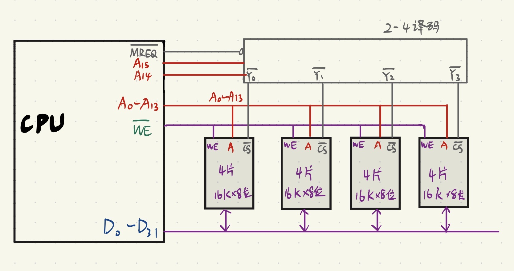
用 \(\overline{MREQ}\) 作为译码器芯片的输出许可证信号，译码器的输出作为存储器芯片的选择信号 ；用 $\overline{WE} $ 作为读写控制信号
补充
借鉴王道计算机考研的资料，如果需要可以找我要电子版的，文件太大了，不太好往我网站传。
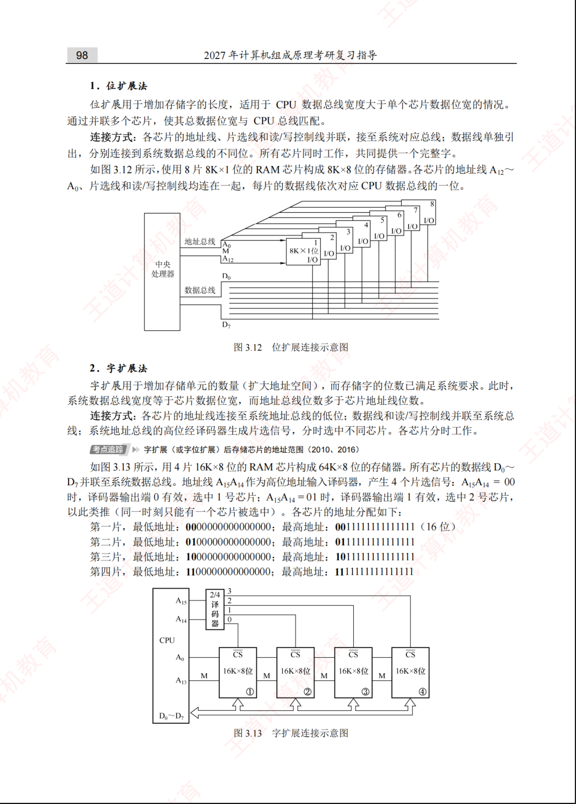
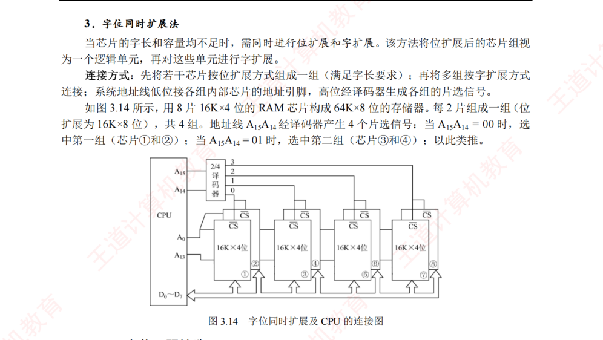
5.作业P122 - 8
设存储器容量为 64MB，字长为 64 位，模块数 m=8，分别用顺序和交叉方式进行组织。存储周期 T=100ns，数据总线宽度为 64 位，总线传送周期 τ=50ns。求：顺序存储器和交叉存储器的带宽各是多少?
🛠️ 思路拆解与核心概念
在做题前，我们先理清什么是“存储器带宽”：
带宽（Bandwidth）就是指存储器在单位时间内能向 CPU 传输的最大数据量。单位通常是 字节/秒（\(\text{B/s}\)）。 核心计算公式：\(\text{带宽} = \dfrac{\text{连续传输的数据量}}{\text{总消耗时间}}\)
1. 顺序存储器（高位地址交叉）
- 核心逻辑：8 个模块是“串行”工作的。当 CPU 访问完第一个模块后，必须等待这个模块的存储周期 \(T\) 彻底结束，才能去访问下一个模块。
- 时间计算：这意味着，每读取一个字（64位），就需要耗费完整的 \(T = 100\text{ns}\)。
- 数据量：数据总线宽度为 64 位 = 8 字节（\(\text{8B}\)）。
2. 交叉存储器（低位地址交叉）
- 核心逻辑：8 个模块采用“流水线”方式并行工作。CPU 发出第一个地址后，数据线经过 \(\tau\) 产生传输，此时第一个模块开始“回血”（恢复期），而 CPU 紧接着在 \(\tau\) 时间后就可以去读第二个模块。
- 时间计算：
- 读取 1 个字的时间就是模块的存储周期 \(T = 100\text{ns}\)。
- 连续读取 \(m\) 个字的总时间公式为：\(t = T + (m - 1)\tau\)。
- 极限情况（流水线完全充满后）：存储器可以达到完美的满载状态，也就是每隔一个总线传输周期 \(\tau = 50\text{ns}\) 就能吐出一个字的数据。
💡 详细解题步骤：
(1) 准备工作：统一基本单位
- 字长 = \(64\text{ 位 (bit)} = \frac{64}{8} = 8\text{ 字节 (Byte)}\)
- 存储周期 \(T = 100\text{ ns} = 100 \times 10^{-9}\text{ s}\)
- 总线传输周期 \(\tau = 50\text{ ns} = 50 \times 10^{-9}\text{ s}\)
- 模块数 \(m = 8\)
(2) 计算顺序存储器的带宽
- 工作特点：各模块串行工作，每隔一个存储周期 \(T\) 只能成功连续读写一个字（\(8\text{B}\)）。
- 计算公式：
- 代入数据：
(3) 计算交叉存储器的带宽
- 工作特点：各模块流水线并行工作。因为满足流水线不间断条件（\(T \le m \times \tau\)，即 \(100\text{ns} \le 8 \times 50\text{ns}\)），在理想的连续读取状态下，每隔一个总线传输周期 \(\tau\) 就能开火一次，吐出一个字（\(8\text{B}\)）的数据。
- 计算公式：
- 代入数据：
- (注：如果使用连续读取 \(m\) 个字的公式计算，带宽为：\(W = \dfrac{m \times \text{字长}}{T + (m-1)\tau} = \dfrac{8 \times 8\text{B}}{100\text{ns} + 7 \times 50\text{ns}} = \dfrac{64\text{B}}{450\text{ns}} \approx 142.22\text{MB/s}\)。但在考研大题无特定字数说明时，标准做法通常按极限最大带宽 \(\dfrac{\text{字长}}{\tau}\) 来直接计算。)
📌 正确答案：
- 顺序存储器的带宽是 \(80\text{MB/s}\)。
- 交叉存储器的带宽是 \(160\text{MB/s}\)。
提醒
老师给的答案是： 1. 顺序存储器的带宽是 \(640\text{Mbps}\)。 2. 交叉存储器的带宽是 \(1280\text{Mbps}\)。
这与我的答案物理含义是一致的，我只是把bit换成了Byte
要注意的是：“若连续读出8个字，求：顺序存储器和交叉存储器的数据传输率各是多少？
“带宽是链路的最大传输能力，而数据传输率是实际的传输速度。”
“带宽是最大理论能力，数据传输率是实际速度”在网络工程或者日常概念里是完全正确的。
但是在计算机组成原理（408考研标准）的语境下，这两个词的微妙区别在于“极限情况”与“特定任务（有限过程）”的计算差异。
当题目明确加上了“若连续读出 8 个字”这个限定条件时，就是在考查你对流水线建立过程（车头拉出阶段）时间损耗的精确计算，此时不能再粗暴地用极限公式了。
🛠️ 核心区别：极限状态 vs 有限任务
1. 顺序存储器：没有区别
- 原理：不管你是读 1 个字、8 个字还是无数个字，顺序存储器都是死板地读完一个、等待 \(T\)、再读下一个。
- 时间：读 8 个字需要完整的 \(8 \times T\)。
- 结论：它的实际传输率和理论带宽永远相等。
2. 交叉存储器：区别就在“前期的等待时间”
- 理论带宽（最大能力）：假设我们源源不断地读几万个字，当流水线完全充满后，前期的“建立时间”可以忽略不计，实际速度无限逼近 \(\frac{\text{字长}}{\tau}\)。
- 实际数据传输率（连续读 8 个字）：现在只读 8 个字，流水线还没跑多久就结束了。第一辆车（第一个字）从发出地址到彻底拿齐数据，必须熬过完整的 \(T=100\text{ns}\)，后面的 7 辆车才能以每隔 \(\tau=50\text{ns}\) 的速度挨个出来。
- 总耗时：\(t = T + (8 - 1)\tau\)。这里的 \(T\) 就是流水线的“建立成本”。由于只读 8 个字，这个成本分摊下来就会拉低实际的传输速度。
💡 “连续读出 8 个字”的精确计算步骤：
(1) 基础已知条件
- 字长 = \(64\text{ 位} = 8\text{ B}\)
- 连续读出数据量 = \(8 \times 8\text{ B} = 64\text{ B}\)
- 存储周期 \(T = 100\text{ ns}\)，总线传送周期 \(\tau = 50\text{ ns}\)，模块数 \(m = 8\)
(2) 顺序存储器的数据传输率
- 耗时计算：各个模块串行执行，读 8 个字需要完整的 8 个存储周期。
- 数据传输率计算：
- 结论：顺序存储器的实际传输率与其最大带宽（\(80\text{MB/s}\)）保持一致。
(3) 交叉存储器的数据传输率
- 耗时计算：采用流水线方式。读出第一个字需要 \(100\text{ns}\)，后续 7 个字每隔 \(50\text{ns}\) 吐出一个。
- 数据传输率计算：
- 结论：因为只连续读了 8 个字，流水线刚充满就结束了，所以实际数据传输率（\(142.22\text{MB/s}\)）小于其理论最大带宽（\(160\text{MB/s}\)）。
📌 考研答题避坑总结
在做组原大题时，只要看到题目出现 “若连续读出 \(n\) 个字，求传输率/带宽” 这种句式：
- 交叉存储器的分母必须使用流水线总时间公式：\(t = T + (n - 1)\tau\)。
- 分子必须使用真实的传输总量：\(\text{数据量} = n \times \text{字长}\)。 只有题目没有提及连续读写多少个字，纯粹问“多体交叉存储器的带宽是多少”时，才直接使用极限公式 \(\frac{\text{字长}}{\tau}\)。
6.作业P122 - 9
CPU 执行一段程序时，cache 完成存取的次数为 2420 次，主存完成存取的次数为 80 次，已知 cache 存储周期为 40ns，主存存储周期为 240ns，求 cache/主存系统的效率和平均访问时间。
这道题考查的是 Cache 性能指标中的两个核心概念：平均访问时间和系统效率。这是考研和期末考试中必考的经典计算题。
- 平均访问时间：CPU 发出很多次请求，有的打中快库（Cache），有的只能去远郊大仓库（主存），平均下来每次花多少时间。
- 系统效率：由于加入了 Cache，系统速度提升了。效率就是理想状态下的最快速度（全中 Cache）占实际平均速度的百分比。
💡 详细解题步骤：
(1) 计算 Cache 的命中率 \(H\)
- 总访问次数：
- 命中率：
(2) 计算平均访问时间 \(T_a\)
- 已知 \(T_c = 40\text{ ns}\)，\(T_m = 240\text{ ns}\)。
- 代入加权平均公式：
(3) 计算 Cache/主存系统的效率 \(e\)
- 效率公式为最快周期与平均周期的比值：
- 代入数据计算：
📌 正确答案：
- Cache/主存系统的平均访问时间是 \(46.4\text{ns}\)。
- Cache/主存系统的效率约为 \(86.2\%\)。
7. 作业P123 - 10
已知 cache 存储周期 40ns，主存存储周期 200ns，cache/主存系统平均访问时间为 50ns，求 cache 的命中率是多少?
这道题是上一题的逆向运算，同样是考研和期末考试中非常高频的经典计算小题。
🛠️ 思路拆解与核心公式
1. 核心公式
依然使用Cache/主存系统平均访问时间 (\(T_a\)) 的加权平均公式：
其中：
- \(T_a\) 为平均访问时间（\(50\text{ns}\)）
- \(T_c\) 为 Cache 存取周期（\(40\text{ns}\)）
- \(T_m\) 为主存存取周期（\(200\text{ns}\)）
- \(H\) 为我们需要求的 Cache 命中率
💡 详细解题步骤：
(1) 建立方程
- 将已知数据 \(T_c = 40\text{ ns}\)，\(T_m = 200\text{ ns}\)，\(T_a = 50\text{ ns}\) 代入平均访问时间公式：
- 解得 \(H\)：
- 转换为百分比：
📌 正确答案：
Cache 的命中率是 \(93.75\%\)（或写成 \(\frac{15}{16}\)）。
8. 作业P123 - 13
一个组相联 cache 由 64 个行组成，每组 4 行。主存储器包含 4K 个块，每块 128 字。请表示内存地址的格式。
这道题是考研（408）中关于 Cache 组相联映射（Set-Associative Mapping）地址切分 最经典的题型。
做这类题的终极套路依然是：把所有的已知量化为 2 的幂次，然后从右往左依次切蛋糕（切分数据位）。
🛠️ 思路拆解与核心概念
一个完整的组相联映射内存地址，从左到右由三部分组成：
[ 主存字块标记 (Tag) ] [ 组索引/组号 (Index) ] [ 块内地址/字地址 (Offset) ]
我们需要依次算出这三个部分各自占多少个二进制位（bit）。
1. 块内地址（Offset）—— 决定最右边切几位
- 核心逻辑：块内地址的位数由每块的大小决定。
- 题目已知：每块有 \(128\text{ 字}\)。
- 因为 \(128 = 2^7\)，所以块内地址占 7 位。
2. 组索引/组号（Index）—— 决定中间切几位
- 核心逻辑：组索引的位数由 Cache 总共分成了多少个组 决定。
- 题目已知：Cache 共有 \(64\text{ 行}\)（块），每组有 \(4\text{ 行}\)（即四路组相联）。
- 那么 Cache 的总组数为：
- 因为 \(16 = 2^4\)，所以组索引/组号占 4 位。
3. 主存字块标记（Tag）—— 剩下全归它
- 核心逻辑：有两种算方法。
- 方法 A（用主存块数算）：主存有 \(4\text{K} = 4096\) 个块。\(4096 = 2^{12}\)，说明主存块号总共需要 \(12\text{ 位}\)。而主存块号是由
Tag + 组号组成的。既然组号占了 \(4\text{ 位}\)，那么 \(\text{Tag} = 12 - 4 = \textbf{8 位}\)。 - 方法 B（用总地址线算）：主存总块数 \(4\text{K} = 2^{12}\)，每块 \(128 = 2^7\) 字。所以主存总容量为 \(2^{12} \times 2^7 = 2^{19}\) 字。总地址线为 \(19\text{ 位}\)。\(\text{Tag位数} = 19 (\text{总位数}) - 4 (\text{组号}) - 7 (\text{块内偏移}) = \textbf{8 位}\)。
💡 详细地址格式推导：
(1) 各字段位数计算
- 块内地址 (Offset)：
- 组索引 (Index)：
- 主存字块标记 (Tag)：
- 系统总地址位数为：\(8 + 4 + 7 = 19\text{ 位}\)。
(2) 内存地址格式图
该计算机的内存地址（按字编址）总长度为 19 位，其格式划分如下：
| 主存字块标记 (Tag) | 组索引 (Index) | 块内地址 (Offset) |
|---|---|---|
| 8 位 | 4 位 | 7 位 |
| \(A_{18} \sim A_{11}\) | \(A_{10} \sim A_7\) | \(A_6 \sim A_0\) |
📌 正确答案：
内存地址格式为：Tag 占 8 位，组索引（组号）占 4 位，块内地址（字地址）占 7 位，总地址长度为 19 位。
9.作业P123 - 14
有一个处理机，主存容量 1MB，字长 1B，块大小 16B，cache 容量 64KB，若 cache 采用直接映 射式，请给出两个不同标记的内存地址，它们映射到同一个 cache 行。
这道题考查的是 Cache 直接映射（Direct Mapping）中的冲突与地址划分原理。题目让我们找两个映射到同一个 Cache 行但标记（Tag）不同的物理地址，这其实是在探究直接映射的“多对一”本质。
我们依然用最快的“切蛋糕法”把地址结构拆解出来。
🛠️ 思路拆解与核心概念
在直接映射下，主存地址从左到右划分为三部分：
[ 主存字块标记 (Tag) ] [ Cache行号/索引 (Index) ] [ 块内地址 (Offset) ]
要让两个不同的内存地址映射到同一个 Cache 行，必须满足两个黄金条件：
- 中间的“Cache行号 (Index)”必须完全相同。
- 左边的“主存字块标记 (Tag)”必须不同。
💡 详细地址划分与答案：
(1) 主存地址格式切分
- 物理地址总位数：\(1\text{MB} = 2^{20}\text{B} \longrightarrow 20\text{ 位}\)
- 块内地址 (Offset)：\(\text{块大小} = 16\text{B} = 2^4\text{B} \longrightarrow 4\text{ 位}\)
- Cache 行索引 (Index)：\(\text{总行数} = \frac{64\text{KB}}{16\text{B}} = 4096 = 2^{12} \longrightarrow 12\text{ 位}\)
- 主存字块标记 (Tag)：\(\text{Tag} = 20 - 12 - 4 = 4\text{ 位}\)
(2) 构造实例
令 \(\text{Index} = \text{0000 0000 0000}_2\)，\(\text{Offset} = \text{0000}_2\)，通过改变 \(\text{Tag}\) 的值可得到两个完全符合题意、映射到 Cache第 0 行 的地址：
| 地址 | 4位 Tag | 12位 Index | 4位 Offset | 二进制全称 | 十六进制地址 |
|---|---|---|---|---|---|
| 地址 1 | 0000 |
0000 0000 0000 |
0000 |
00000000000000000000 |
00000H |
| 地址 2 | 0001 |
0000 0000 0000 |
0000 |
00010000000000000000 |
10000H |
📌 正确答案：
内存地址 00000H 和 10000H（或任意满足中间 12 位相同且最高 4 位不同的地址对）拥有不同的标记，但由于索引完全相同，它们都会映射到同一个 Cache 行（第 0 行）。
10.作业P123 - 15
假设主存容量 16M×32 位，cache 容量 64K×32 位，主存与 cache 之间以每块 4×32 位大小传送 数据，请确定直接映射方式的有关参数，并画出主存地址格式。
这里有一个需要特别注意的“小陷阱”：题目给出的所有容量和块大小都带着 ×32位。这意味着，这道题的计算机系统是按“字（Word）”来编址的，每个字的长度是 32 位。我们在切分地址时，所有的单位都要统一用“字”来计算，而不是传统的“字节（Byte）”。
🛠️ 思路拆解与核心参数计算
在直接映射下，主存地址从左到右划分为三部分：
[ 主存字块标记 (Tag) ] [ Cache行号/索引 (Index) ] [ 块内地址 (Offset) ]
1. 系统总地址位数
- 主存容量 = \(16\text{M} \times 32\text{位}\)。既然是以 32 位字长为单位编址，说明主存共有 \(16\text{M}\) 个存储字单元。
- 因为 \(16\text{M} = 16 \times 2^{20} = 2^4 \times 2^{20} = 2^{24}\)，所以主存总地址线为 24 位。
2. 块内地址位数（Offset）
- 主存与 Cache 之间以每块 \(4 \times 32\text{位}\) 大小传送数据。也就是说，一块里面包含了 4 个字。
- 因为 \(4 = 2^2\)，所以块内地址（字地址）占 2 位。
3. Cache 行号/索引位数（Index）
- Cache 总容量 = \(64\text{K} \times 32\text{位}\)，即共有 \(64\text{K}\) 个字单元。
- Cache 的总行数（块数） = \(\frac{\text{Cache总字数}}{\text{每块字数}} = \frac{64\text{K}}{4} = 16\text{K}\) 行。
- 因为 \(16\text{K} = 16 \times 2^{10} = 2^4 \times 2^{10} = 2^{14}\)，所以Cache 行号占 14 位。
4. 主存字块标记位数（Tag）
- \(\text{Tag 位数} = 24 (\text{总位数}) - 14 (\text{行号}) - 2 (\text{块内偏移}) = \textbf{8 位}\)。
5. 主存地址格式图
该计算机按字编址的总长度为 24 位，直接映射方式下的物理地址格式划分如下：
| 主存字块标记 (Tag) | Cache行号 (Index) | 块内地址 (Offset) |
|---|---|---|
| 8 位 | 14 位 | 2 位 |
| \(A_{23} \sim A_{16}\) | \(A_{15} \sim A_2\) | \(A_1 \sim A_0\) |
📌 正确答案：
有关参数为：主存总地址 24 位，Cache 行号占 14 位，块内地址占 2 位，主存字块标记（Tag）占 8 位。主存地址格式见上表。
11.作业P123 - 21
设某系统采用页式虚拟存储管理，页表存放在主存中。
(1)如果一次内存访问使用 50ns，访问一次主存需用多少时间？
(2)如果增加 TLB，忽略查找 TLB 表项占用的时间，并且 75%的页表访问命中 TLB，内存的有效访问 时间是多少？
这道题考查的是虚拟存储器中 TLB（快表）对内存有效访问时间（EAT, Effective Access Time）的影响。这是 408 考研和各大高校期末考试中非常经典的必考大题。
我们直接用最形象的“去商场买东西”的逻辑来拆解这两问。
🛠️ 思路拆解与核心概念
(1) 如果没有 TLB，访问一次主存数据需用多少时间？
- 核心逻辑：CPU 给出的地址是虚拟地址，它想拿到真正的物理数据。
- 第一步：CPU 必须先去内存里翻看“页表（Page）”，查到数据到底在哪一页，这需要访问一次内存（花费 50ns）。
-
第二步：拿到真实的物理地址后，CPU 再次访问内存去把真正的物理数据读出来，这又需要访问一次内存（花费 50ns）。
-
结论：在没有快表的情况下，每次读写数据都雷打不动地需要访问两次内存。
(2) 如果增加了 TLB，有效访问时间是多少？
- 核心逻辑：有了快表（TLB），CPU 查地址时会分流：
- 情况 A：TLB 命中（概率 75%）：CPU 速度极快地在 CPU 内部就把物理地址查到了。因为题目说“忽略查找 TLB 的时间（0ns）”，所以 CPU 查完地址后，直接去内存里读真正的物理数据即可。这时候只需要访问 1 次内存（花费 50ns）。
-
情况 B：TLB 未命中（概率 25%）：快表里没查到。CPU 只能自认倒霉，回到第（1）问的老路子上——先访问内存查页表（50ns），再访问内存读数据（50ns），总共需要访问 2 次内存（花费 100ns）。
-
最后一步：把这两种情况按照概率加权平均，就能得到系统的有效访问时间。
💡 详细解题步骤：
(1) 无 TLB 时的访问时间计算
- 在没有 TLB 的页式存储管理中，CPU 每次数据访问都需要双倍内存时间：
- 代入数据：
(2) 增加 TLB 后的有效访问时间 (EAT) 计算
- TLB 命中时（75%的概率）：
- TLB 未命中时（25%的概率）：
- 有效访问时间计算：
📌 正确答案：
- 访问一次主存需要 \(100\text{ns}\)。
- 引入 TLB 后，内存的有效访问时间是 \(62.5\text{ns}\)。
番外题
12.Cache 地址划分与总容量计算
题目：某计算机的主存容量为 256KB，Cache 容量为 2KB，每块大小为 64B。分别求直接映射和2路组相联映射下主存地址各字段的位数，并计算Cache总容量。
🛠️ 解题步骤
基本参数计算：
- 主存容量 = \(256\text{KB} = 2^{18}\text{B}\) → 主存地址 18 位
- 块大小 = \(64\text{B} = 2^6\text{B}\) → 块内地址（Word）= 6 位
- 主存块数 = \(256\text{KB} / 64\text{B} = 4096 = 2^{12}\) 块
- Cache块数 = \(2\text{KB} / 64\text{B} = 32 = 2^5\) 块
直接映射：
- Cache行号位数 = \(5\) 位（\(2^5 = 32\) 行）
- 标记位数 = \(18 - 5 - 6 = 7\) 位
- 主存地址结构：
Tag(7位) + Line(5位) + Word(6位) - Cache总容量（含有效位）= \(32 \times (7 + 1 + 64 \times 8) = 32 \times 520 = 16640\) 位
2路组相联映射：
- 组数 = \(32 / 2 = 16 = 2^4\) 组
- 组号位数 = \(4\) 位
- 标记位数 = \(18 - 4 - 6 = 8\) 位
- 主存地址结构：
Tag(8位) + Set(4位) + Word(6位) - Cache总容量（含有效位）= \(32 \times (8 + 1 + 64 \times 8) = 32 \times 521 = 16672\) 位
若采用写回法，每组还需加1位脏位：直接映射 \(= 32 \times (7+1+1+512) = 16672\) 位，2路组相联 \(= 32 \times (8+1+1+512) = 16704\) 位。
13.Cache 命中率与平均访问时间
题目：某Cache-主存系统中，Cache存取周期为 20ns，主存存取周期为 200ns。设Cache命中率为 90%，求平均访问时间和访问效率。
🛠️ 解题步骤
- 平均访问时间：\(t_a = h \cdot t_c + (1-h) \cdot t_m = 0.9 \times 20 + 0.1 \times 200 = 18 + 20 = 38\text{ns}\)
- 访问效率：\(e = t_c / t_a = 20 / 38 \approx 52.6\%\)
注意：若采用"先访问Cache再访问主存"的方式，命中时只需 \(t_c\)，未命中时需 \(t_c + t_m\)（先查Cache未命中，再访问主存），此时 \(t_a = 0.9 \times 20 + 0.1 \times (20+200) = 40\text{ns}\)。两种方式差一个 \(t_c\)，审题要看清是哪种访问方式。
14.LRU 替换算法命中率计算
题目：某Cache采用4路组相联映射，某组中已有块号为 2、8、6、4 的数据。现在依次访问块号为 8、2、6、8、4 的数据，采用LRU替换算法，求命中率。
🛠️ 解题步骤
LRU的核心规则：最近被访问的块移到"最近使用"端，最久未使用的块在"最久未用"端，替换时淘汰最久未用端。
初始状态（从最近到最远）：4, 6, 8, 2
| 访问块号 | 命中？ | 调整后（最近→最远） |
|---|---|---|
| 8 | 命中 | 8, 4, 6, 2 |
| 2 | 命中 | 2, 8, 4, 6 |
| 6 | 命中 | 6, 2, 8, 4 |
| 8 | 命中 | 8, 6, 2, 4 |
| 4 | 命中 | 4, 8, 6, 2 |
命中率 = 5/5 = 100%（本题命中率高是因为访问序列恰好都在Cache中）
15.多模块交叉存储器带宽计算
题目：一个4体低位交叉存储器，每个模块的存取周期为 200ns，总线传送周期为 50ns。求连续读取 8 个字的时间和带宽。
🛠️ 解题步骤
- 验证流水线条件：模块数 \(m = 4\)，总线周期 \(\tau = 50\text{ns}\)，则 \(m \times \tau = 4 \times 50 = 200\text{ns} = T\)，满足 \(T = m\tau\)，可以采用流水线方式。
- 连续读8个字的时间：
- 第1个字：完整的存取周期 \(T = 200\text{ns}\)
- 后续7个字：每隔 \(\tau = 50\text{ns}\) 产出一个
- 总时间 = \(T + (8-1) \times \tau = 200 + 7 \times 50 = 550\text{ns}\)
- 带宽：
- 低位交叉带宽 = 数据量 / 总时间 = \(8 / 550\text{ns} \approx 14.5 \times 10^6\) 字/秒
- 对比顺序方式：\(8 \times 200 = 1600\text{ns}\)，带宽仅 \(8 / 1600\text{ns} = 5 \times 10^6\) 字/秒
- 低位交叉约为顺序方式的 2.9倍
16.DRAM 刷新计算
题目：某DRAM芯片有128行，存取周期为 50ns，刷新周期为 2ms。分别计算集中刷新、分散刷新和异步刷新下的死时间。
🛠️ 解题步骤
-
集中刷新：
- 在2ms末集中刷新128行，每次刷新一行耗时等于存取周期50ns
- 死时间 = \(128 \times 50\text{ns} = 6400\text{ns} = 6.4\mu s\)
- 正常工作时间 = \(2\text{ms} - 6.4\mu s \approx 1993.6\mu s\)
-
分散刷新：
- 每个存取周期拆成两半：前半读/写，后半刷新
- 系统存取周期变为 \(2 \times 50 = 100\text{ns}\)
- 无死区，但整个系统速度降低一半
-
异步刷新：
- 将128次刷新均匀分配到2ms中
- 刷新间隔 = \(2\text{ms} / 128 = 15.625\mu s\)
- 每隔 \(15.625\mu s\) 刷新一行，每行刷新仅耗时50ns
- 死时间 = 单行刷新时间 = \(50\text{ns}\)（相比集中刷新的 \(6.4\mu s\) 大幅缩短）